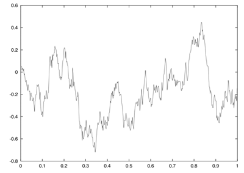
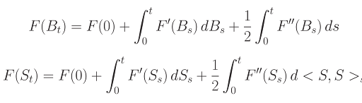

Résumé
Ce cours couvre les fondamentaux des processus stochastiques et leur application en finance. Il se compose de quatre chapitres principaux.
Supports de cours
Chapitre 1 : Fondamentaux et Principes de Base
Ce chapitre établit les bases essentielles de la théorie des probabilités, indispensables pour comprendre les processus stochastiques en finance...

Chapitre 2 : Mouvement Brownien et Calcul d’Itô
Le chapitre aborde le Mouvement Brownien, un élément central de la théorie des probabilités et de la finance quantitative...

Chapitre 3 : Applications en Finance
Ce chapitre se concentre sur les principales applications en finance quantitative, mettant en lumière le modèle de Black-Scholes...

Chapitre 4 : Techniques d’Évaluation
Dédié aux méthodes d’évaluation nécessaires pour une compréhension approfondie des concepts étudiés...